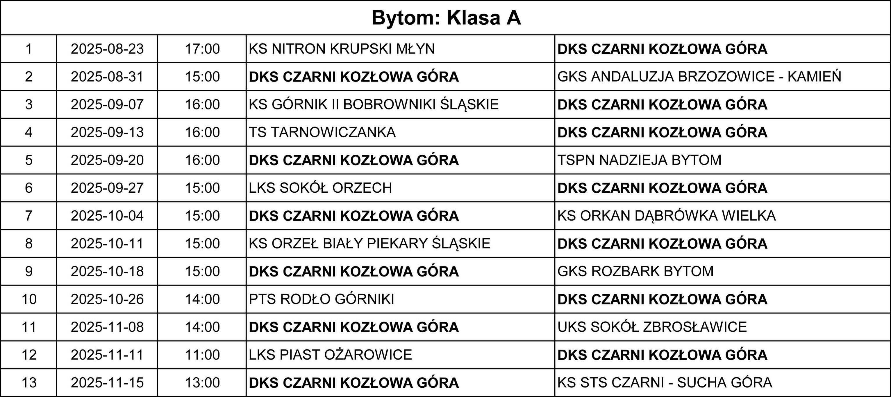
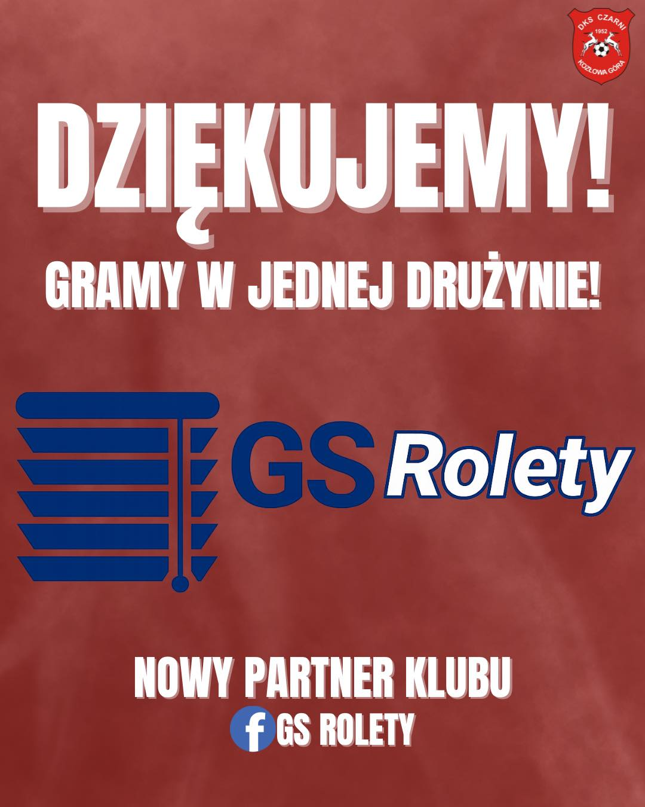
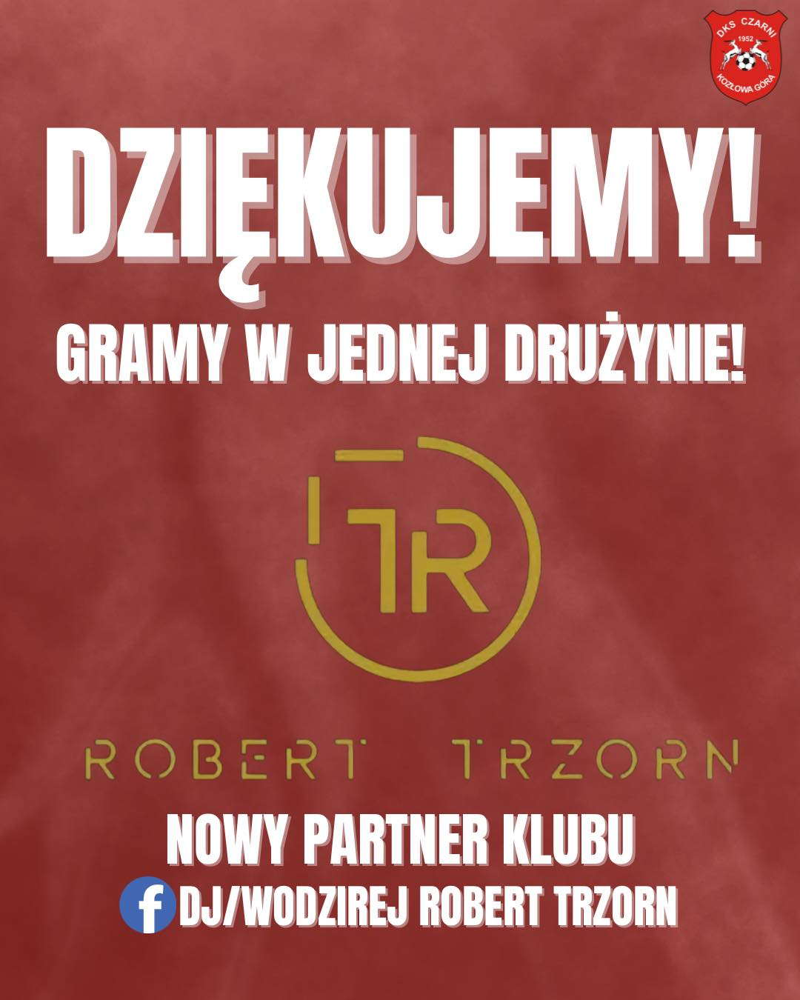
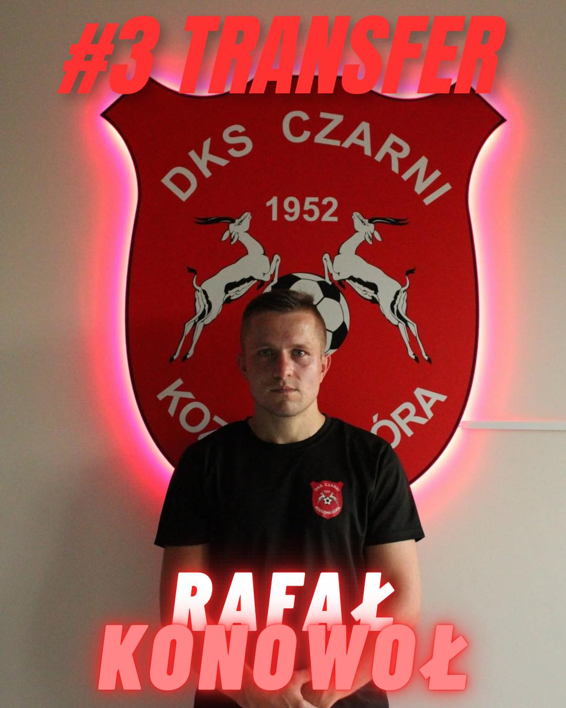
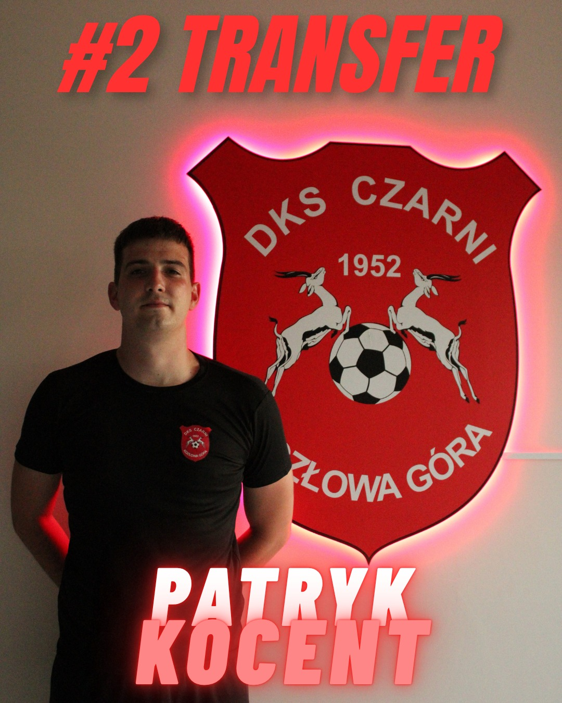

📢 Terminarz na sezon 2025/26 📢
Terminarz drużyny seniorów A klasa oraz drużyny Juniorów III Liga Wojewódzka A1 Bytom-Zabrze. Wszystkie zmiany w terminarzach będą podawane na bieżąco.
📢 Nowy partner klubu 📢
👏 Witamy na pokładzie! Miło nam poinformować, że do grona partnerów naszego klubu dołącza GS Rolety 🪟 Dziękujemy za wsparcie i zaufanie! 💪⚽ Gramy w jednej drużynie! 🔴⚫ 👉 Strona FB partnera
📢 Nowy partner klubu 📢
👏 Witamy na pokładzie! Miło nam poinformować, że do grona partnerów naszego klubu dołącza Robert Trzorn – DJ/Wodzirej 🎶 Dziękujemy za wsparcie i zaufanie! 💪⚽ Gramy w jednej drużynie! 🔴⚫ 👉 Strona FB partnera
📢 #3 TRANSFER 📢
Do naszego klubu wraca Rafał Konowoł! 💪⚽ 🔙 Rafał to doskonale znany nam zawodnik – przez wiele sezonów bronił barw Kozłowej Góry, będąc ważnym ogniwem naszej drużyny. Na boisku występuje jako pomocnik, a jego doświadczenie i boiskowa inteligencja nieraz pomagały nam w kluczowych momentach. Ostatnio reprezentował LKS Unię Świerklaniec, skąd wraca do nas na zasadzie wolnego transferu. Nie możemy się doczekać, aż ponownie zobaczymy go w akcji! 🔴⚫ Witamy z powrotem w Kozłowej Górze, Rafał! ❤️🖤
📢 #2 TRANSFER 📢
Guess who’s back? 😎 Do naszego klubu wraca Patryk Kocent! 💪⚽ 🔙 W poprzednim sezonie był podstawowym bramkarzem Czarnych Sucha Góra, opuszczając jedynie 3 kolejki. Patryk jest dobrze nam znanym zawodnikiem ponieważ grał u nas przez parę sezonów. Udało mu się z nami zrobić awans do A klasy oraz do ligi okręgowej. W swoim cv może również zapisać występy w LKS Unii Świerklaniec. 🗣 Patryk: „Cieszę się, że mogę wrócić do klubu, gdzie stawiałem swoje pierwsze kroki w piłce seniorskiej. Jestem mega szczęśliwy i gotowy do ciężkiej pracy.” Nie możemy się doczekać jego występów w naszych barwach! 🔴⚫ Witamy z powrotem w Kozłowej Górze, Patryk!
📢 #1 TRANSFER 📢
Z radością ogłaszamy, że Olivier Maciejewski, urodzony 29 maja 2008 roku, dołącza do naszej drużyny jako #1 TRANSFER tego okienka!
Olivier jest wychowankiem Gwarka Zabrze, swojego jedynego dotychczasowego klubu.
Olivier jest już od jakiegoś czasu z nami – wystąpił w 5 sparingach, w których zdobył łącznie 3 bramki i zanotował 1 asystę. Witamy w drużynie i trzymamy kciuki za kolejne dobre występy!